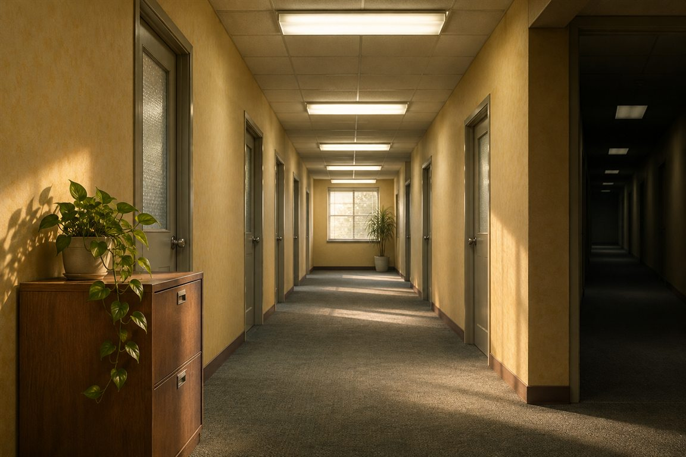

Backrooms and Liminal Spaces Deep Dive
What makes an empty corridor feel familiar and unsettling at once? Explore how architecture, nostalgia and internet culture come together in liminal imagery and the Backrooms.

On this page
Summary
Broad conceptual framework on what liminal spaces are, why they produce restlessness and nostalgia at the same time, how The Backrooms crystallizes that aesthetic and why the phenomenon became a central mythology of recent internet culture.
What does it actually contain?
The source combines four levels that usually appear scattered:
- anthropological and aesthetic definition of liminality
- psychological effects: uncanny, absence, derealization and nostalgia
- cultural expansion in photography, forums, TikTok, creepypasta and video games
- the Backrooms case as an extreme example of a threshold space converted into collaborative horror
Why it matters
This note gives the base vocabulary so that the Backrooms line does not remain just a lore. It also allows it to be read as a visual, cultural and psychological phenomenon. Without this framework, many X Files notes would be reduced to "weird internet stuff"; With this framework, they become classifiable and comparable material.
Operational definition
A liminal space is a space of transition, crossing or waiting that becomes disturbing when it appears empty, out of context or separated from its usual use.
Typical examples:
- school hallways without students
- empty malls
- waiting rooms without people
- playgrounds at night
- lobbies, stairs, tunnels or parking lots without activity
The key is not just that the place is empty. The key is that the brain recognizes that there should be activity, purpose, or flow, but it doesn't find it.
Conceptual origin
Anthropology
- Liminal comes from limen, threshold.
- Arnold van Gennep and Victor Turner used the idea of liminality to describe intermediate phases in rites of passage.
- In that state one does not completely belong to before or after.
Architecture and urbanity
- In contemporary use, the notion is transferred to transit spaces: corridors, lobbies, bridges, terminals, waiting rooms.
- They are places made to pass through, not to fully inhabit.
- When emptied or photographed without context, they lose function and gain aura.
Non-places
- The connection with Marc Augé is useful: airports, gas stations, shopping centers and other anonymous infrastructures function as "non-places."
- They are not defined by strong identity, but by circulation, transit and repetition.
- This lack of identity makes it easy for them to feel unreal when the human flow disappears.
Why do they feel "bad"
1. Uncanny architectural
- An empty hallway, office or patio remains recognizable.
- But the absence of people, noise, signs of use or normal proportions produces dissonance.
- The spacing seems almost right, not quite right.
- This mismatch activates a spatial form of the uncanny valley: the familiar stops feeling safe.
2. Failure of presence
- There are spaces that imply an automatic life expectancy: school, hotel, mall, airport.
- When the shell appears without the expected behavior, an active absence is perceived.
- Not only "there is no one"; it feels like there should be someone.
- That absence is experienced as a trace, void or ghostly remains.
3. Abnormal nostalgia
- Many liminal images seem like fragments of misremembered childhood.
- Old rugs, fluorescents, nineties decorations or worn palettes activate diffuse memory.
- The emotional response is not pure fear: there is also longing, stillness, and a kind of spatial melancholy.
- That's why the genre works so well: it mixes comfort with menace.
4. Derealization and disorientation
- Repetition, silence and lack of human reference erode the sense of stable reality.
- Some liminal content even circulates with warnings for triggering states of depersonalization or derealization.
- Backrooms takes this effect to the extreme: it turns the sensation into a geometric prison.
The Backrooms as a canonical case
Memetic origin
- The Backrooms was born in 2019 from an image of yellow interiors and a creepypasta text spread on 4chan.
- The premise was simple and powerful: if you noclip out of reality, you land in an infinite labyrinth of damp offices, fluorescent hums and the smell of old carpet.
- The founding text offers very little, but that is exactly why it enables infinite expansion.
Why did it explode so quickly?
- the image seemed banal and cursed at the same time
- Anyone could recognize something vaguely similar from their childhood or from real buildings
- The idea of "infinite space of the everyday" is easy to memeify and difficult to forget
- The internet was ready for VHS aesthetics, analogue horror and collaborative folklore.
Original image and real context
- The iconic image came from a banal place in the real world.
- This detail reinforces the core of the phenomenon: horror is born from decontextualization, not from a monstrous set.
- You don't need a Gothic castle; an office that is too empty and too yellow is enough.
Psychology of the phenomenon
Dominant emotions
- concern
- nostalgia
- strangeness
- soft claustrophobia
- obsessive curiosity
Useful affective formula
incomplete familiarity + absence of life + repetition + diffuse memory = effective liminality
Cognitive effect
These images are powerful because they force two simultaneous readings:
- "I know what kind of place it is"
- "but this place shouldn't look like this"
That contradiction makes it difficult to stop looking. The viewer tries to resolve what is wrong and, unable to do so, enters into an experience that is somewhere between contemplative and anxious.
cultural phenomenon
Internet and mass healing
- Reddit, Tumblr, Twitter, Instagram, and then TikTok cemented liminal aesthetics as a recognizable genre.
- Subreddits, bots and curatorial accounts standardized the type of image: low resolution, worn light, emptiness, washed out colors, dreamy feeling.
- The pandemic reinforced this imaginary by showing real cities, terminals and malls completely empty.
collaborative horror
- Backrooms expanded as other large internet universes did: by community aggregation.
- Users added levels, entities, rules, maps and taxonomies.
- The phenomenon shares DNA with SCP: documentary appearance, archival tone and collective growth.
analog horror
- VHS aesthetics, faux institutional evidence, corporate voice, and tape errors fit naturally with liminal spaces.
- Kane Pixels takes this intersection to the maximum: it unites architectural liminality with pseudo-engineering, entities and technical bureaucracy.
Video games and explorable spaces
- The genre quickly migrated to games because liminal fear benefits from slow exploration, uncertainty, and spatial repetition.
- Some games exploit the absence of monsters; others add persecution.
- The key remains the same: explore a space that seems normal but never ends up behaving like a habitable place.
Concept map useful for the wiki
Liminality
Threshold, transit, suspension or intermediate step condition.
Uncanny
Sensation of strangeness that arises when something familiar appears slightly deviated.
Non-place
Infrastructure for transient, anonymous and repeatable use, with weak identity.
Backrooms
Extreme and fictionalized version of liminality converted into a closed world.
analog horror
Format that simulates files, tapes, security cameras or corporate videos to make the impossible plausible.
Pseudofile
Set of pieces that appear to be documentary evidence of a real system: reports, recordings, presentations, logs, scans.
Classification rule for future notes
When something enters this subarea, it is best to first decide what its dominant axis is:
1. liminal aesthetics — images, photography, atmosphere, architecture
2. lore / worldbuilding — levels, entities, chronologies, internal stories
3. internet culture — creepypasta, memes, fandom, forums, bots, TikTok
4. psychological analysis — uncanny, nostalgia, derealization, perception
5. documentary format — analog horror, pseudo-archive, found footage
Critical reading
The strongest
- connects theory, psychology and digital culture in a single framework
- explains why Backrooms works even if it starts from a minimal idea
- offers reusable vocabulary for many other X Files oddities
What should not be exaggerated
- Not all empty space is liminal in the strong sense.
- psychological experience is not universal; some people feel calm where others feel horror
- Some of the online discourse on liminality is intuitive or aesthetic, not strictly academic.
Useful rule
If a note only describes that something "gives off weird vibes," it's still green. To mature it you have to explain:
- what spatial pattern activates
- what dominant emotion produces
- whether it is an aesthetic, cultural or narrative phenomenon
- how is it related to Backrooms or analog horror
Value for X Files
- gives theoretical basis to the Backrooms / liminal / internet lore axis
- helps connect visual weirdness with digital perception and culture
- allows comparison of this subarea with other forms of anomalous filing, conspiracy, and pseudoevidence
Main source
- PDF: backrooms-liminal-spaces-deep-dive.pdf
Related
x-files backrooms-kane-pixels-timeline cia-mars-exploration-1984 personal